class:inverse ### The role of the connectome in achieving artificial general intelligence <br> <br> <br> <br> <br> <br> <br> Joshua T. Vogelstein | {[BME](https://www.bme.jhu.edu/),[CIS](http://cis.jhu.edu/), [ICM](https://icm.jhu.edu/), [KNDI](http://kavlijhu.org/)}@[JHU](https://www.jhu.edu/) | [neurodata](https://neurodata.io) <br> [jovo@jhu.edu](mailto:j1c@jhu.edu) | <http://neurodata.io/talks> | [@neuro_data](https://twitter.com/neuro_data) --- class: inverse ## What is Learning? "An algorithm $f$ learns from data $\mathcal{D}_n$ with performance measure $\mathcal{E}$, if $f$'s performance improves with $n$.'' -- Tom Mitchell, 1997 (not exact quote) --- class: inverse ## Consider a simple example - 2 classes: green and purple - we observe 100 points - each point has 2 features (eg, height and weight) - we desire to .ye[learn] a classifier that discriminates between these two classes --- class: inverse 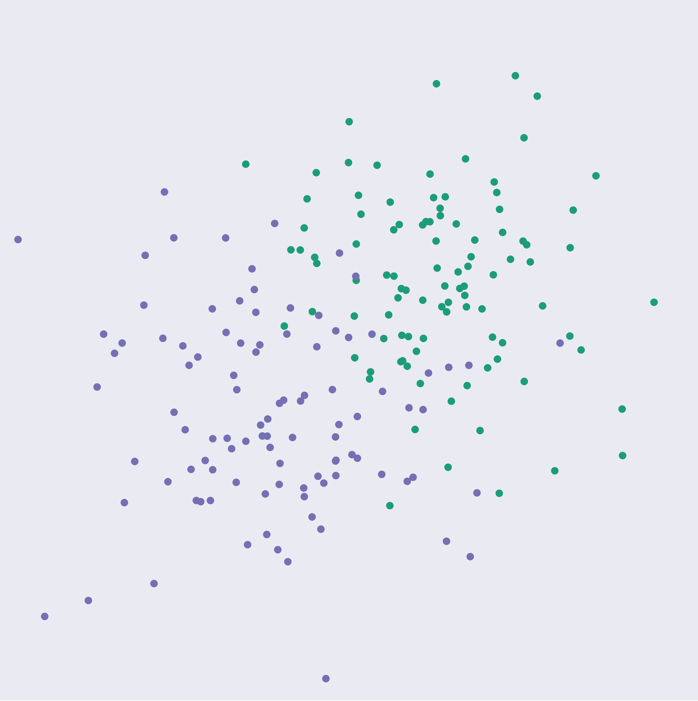 --- class: inverse 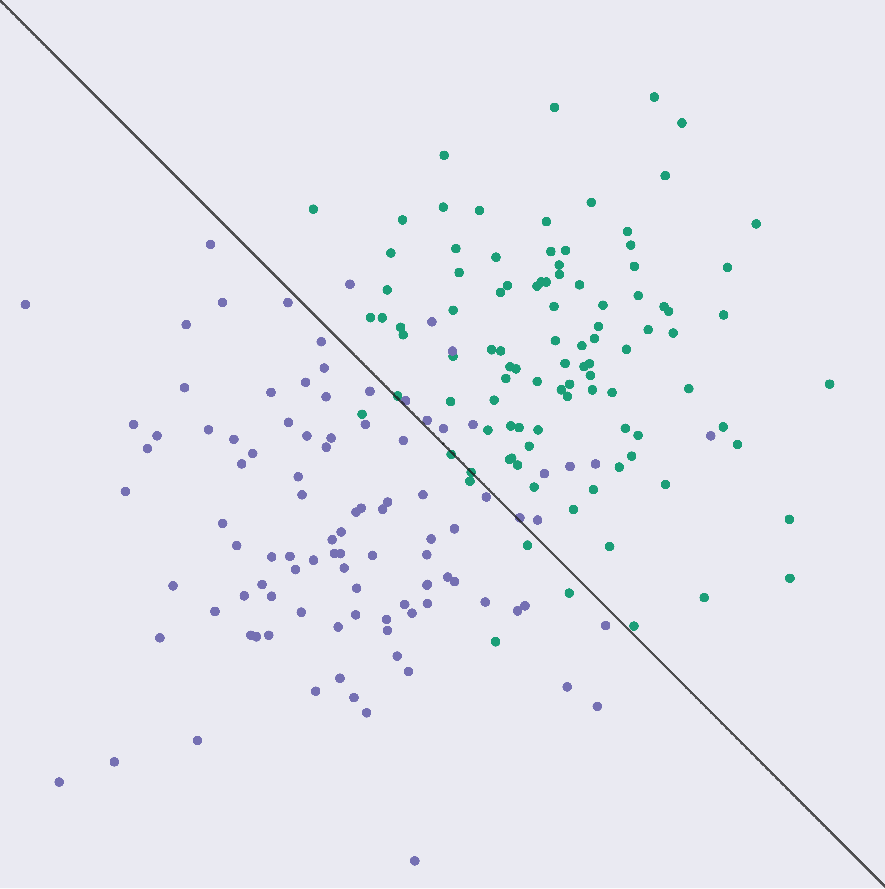 --- class: inverse 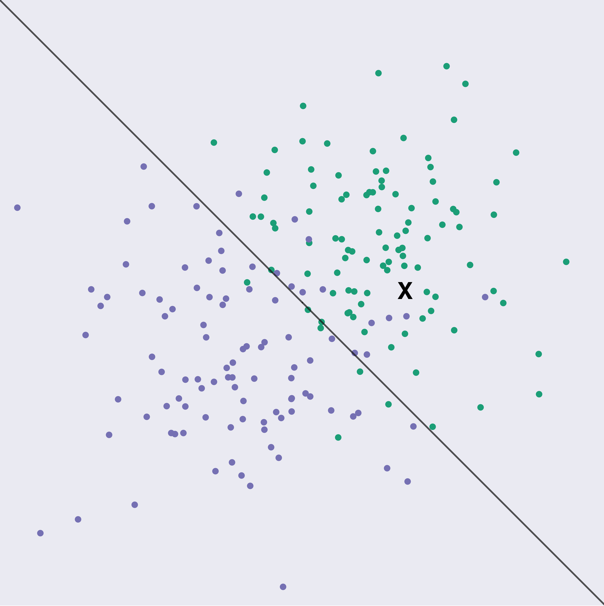 --- class:inverse ## What do classifiers do? --- 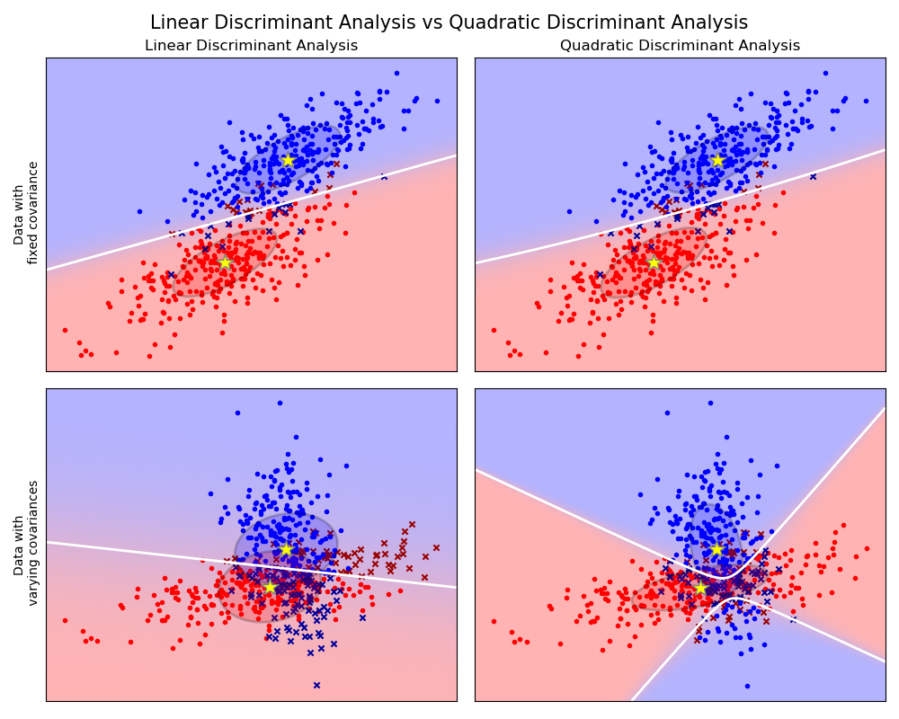 --- 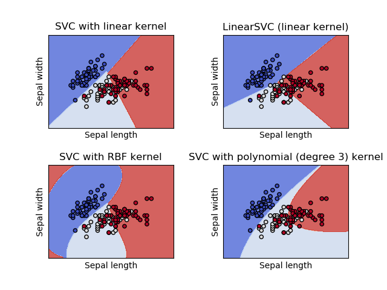 --- 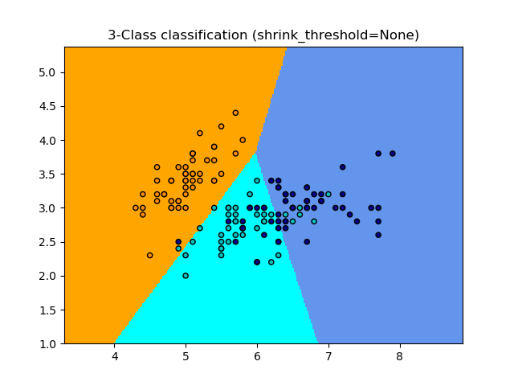 --- <img src="images/rock20/sphx_glr_plot_classification_001.png" class="center"/> --- 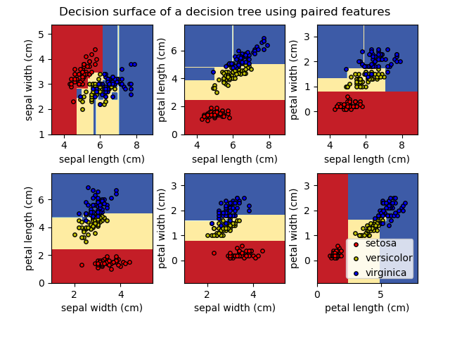 --- 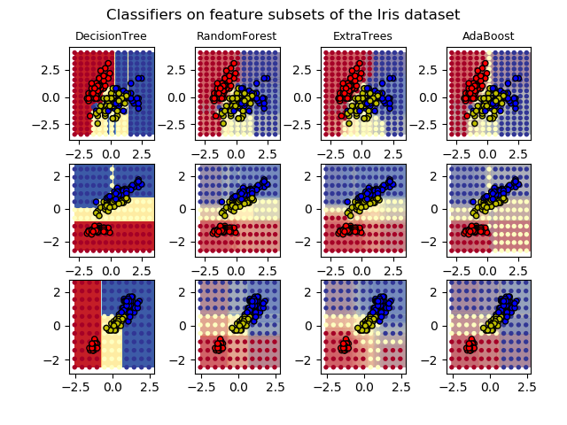 --- class:inverse ## What do classifiers do? <br> learn: given $(x_i,y_i)$, for $i \in [n]$, where $y \in \lbrace 0,1 \rbrace$ 1. partition feature space into "parts", 2. count votes per part per class. predict: given $x$ 2. find its part, 3. report the plurality vote in its part. --- class:inverse ## The fundamental theorem of statistical pattern recognition If each part is: 1. small enough, and 2. has enough points in it, then given enough data, one can learn *perfectly, no matter what*! -- Stone, 1977 <!-- NB: the parts can be overlapping (as in kNN) or not (as in histograms) --> --- class:inverse ## Do brains do it? -- (brains obviously learn) 1. Do brains partition feature space? 2. Is there some kind of "voting" occurring within each part? --- class: inverse ## Brains partition - Feature space = the set of all possible inputs to a brain - Partition = only a subset of "nodes" respond to any given input - Examples 1. visual receptive fields 2. place fields / grid cells 3. sensory homonculus <br> <img src="images/rock20/Side-black.gif" style="height:230px;"/> <img src="images/rock20/Front_of_Sensory_Homunculus.gif" style="height:230px;"/> <img src="images/rock20/Rear_of_Sensory_Homunculus.jpg" style="height:230px;"/> --- class: inverse, middle .center[.ye[Claim 1: the connectome implements partitioning of feature space.]] --- class: inverse ## Brains vote Vote = pattern of responses indicate which stimulus evoked response <img src="images/rock20/brody1.jpg" style="height:400px;" /> --- class: inverse, middle How many tasks do you know how to do? --- class: inverse, middle Shouldn't learning be .ye[faster] if we already learned a related task? -- Yes. This is called "transfer learning." --- class: inverse ## Honey Bees can do it 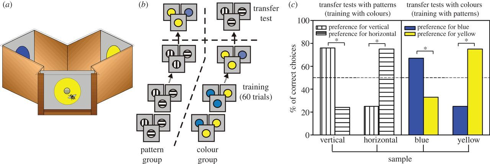 -- <br><br><br><br><br><br><br><br><br><br><br> - honey bees can also transfer to different sensory modality (smell) - honeybees do not forget how to do the first task - this is called "forward transfer" - bees learn the concept of "sameness" --- class: inverse ## How to transfer learn? learn: given a new dataset 1. learn/recruit a new partition of feature space 2. count votes per class for each part .ye[from each existing partition] predict: given a sample and task 2. find its part in *all* existing paritions, 3. compute average over partitions 3. report the winning class -- key insights - .ye[One can compose different parcellations] - Sequentially learn many different parcellations (one per task) - Represent each datapoint using all parcellations - Vote on the joint representation - This is ensembling representations. --- class: inverse, middle .center[.ye[Claim 2: learning is recruiting/growing neural circuits for a new task.]] --- class:inverse ## Consider an example - *CIFAR 100* is a popular image classification dataset with 100 classes of images. - CIFAR 10x10 breaks the 100-class task problem into 10 tasks, each with 10-class. - 500 training images and 100 testing images per class. - All images are 32x32 color images. <img src="images/l2m_18mo/cifar-10.png" style="position:absolute; left:250px; width:400px;"/> <!-- TODO@JD: replace CIFAR10 image with same thing but using CIFAR100 images and categories --> --- class:inverse ## Forward Transfer Efficiency - y-axis: ratio of "single task error" to "error using .ye[past] tasks" - each algorithm has a line, if the line .ye[increases], that means it is doing "forward transfer" --- class:inverse <!-- 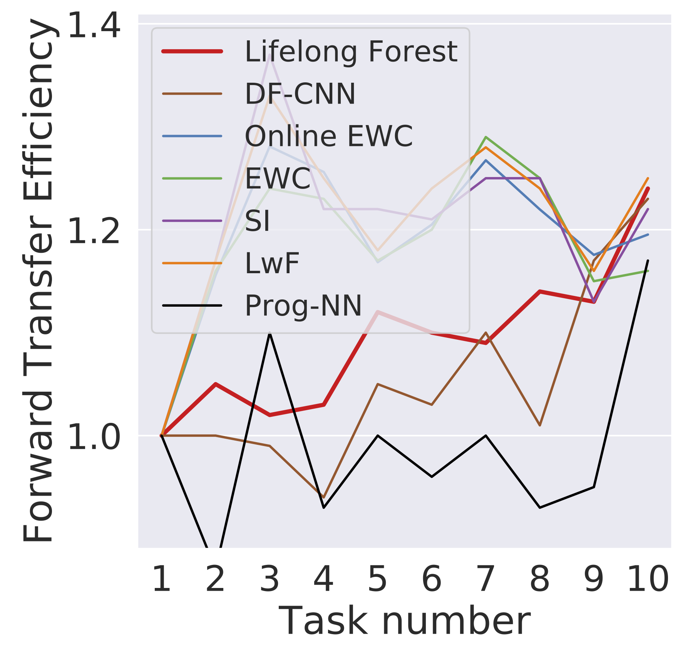 --> 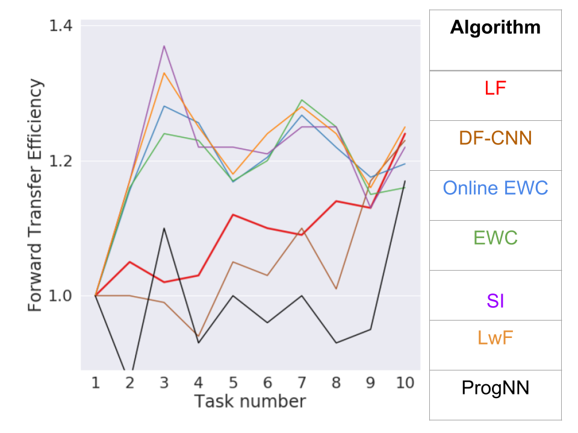 <!-- TODO@JD: replace with average FTE + "error bars" and add legend outside --> --- class:inverse ## Reverse Transfer Efficiency - y-axis: ratio of "single task error" to "error using .ye[future] tasks" - each algorithm has a line per task: if the line .ye[increases], that means it is doing "reverse transfer" --- class:inverse .ye[Lifelong Forests] uniquely exhibits reverse transfer. 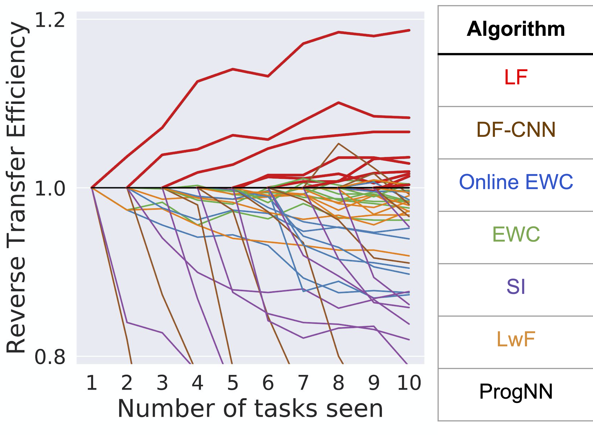 <!-- TODO@JD: replace with average RTE + "error bars" and add legend outside --> --- class:inverse ## The fundamental *conjecture* of transfer learning If each cell is: - small enough, and - has enough points in it, then given enough data, one can .ye[transfer learn] *perfectly, no matter what*! -- jovo, 2020 --- class:inverse ## So What? - If our conjecture is right, the only way to sequentially transfer learn is to (approximately) use the outlined approach - Brains are not fully general sequential learners - Studying learning in the brain essentially requires studying the differences before and after learning - Testable Prediction: learning tasks that require different .ye[parcellations] requires building/recruiting new circuits - Behavioral measures: learning should be slower - Connectivity measures: structural connectome should change only after learning things that require new parcellations - *Triplet experiment*: source, no new partition, yes new partition --- class: inverse ## References 1. H. Helm et al. Lifelong Learning Forests, 2020 1. R. Mehta et al. A General Theory of Learnability, 2020. 3. T. M. Tomita et al. [Sparse Projection Oblique Randomer Forests](https://arxiv.org/abs/1506.03410). arXiv, 2018. 1. R Guo, et al. [Estimating Information-Theoretic Quantities with Uncertainty Forests](https://arxiv.org/abs/1907.00325). arXiv, 2019. 1. R. Perry, et al. [Manifold Forests: Closing the Gap on Neural Networks](https://arxiv.org/abs/1909.11799). arXiv, 2019. 1. M. Madhya, et al. [Geodesic Learning via Unsupervised Decision Forests](https://arxiv.org/abs/1907.02844). arXiv, 2019. 1. C. Shen and J. T. Vogelstein. [Decision Forests Induce Characteristic Kernels](https://arxiv.org/abs/1812.00029). arXiv, 2018 7. J. Browne et al. [Forest Packing: Fast, Parallel Decision Forests](https://arxiv.org/abs/1806.07300). SIAM ICDM, 2018. More info: [https://neurodata.io/sporf/](https://neurodata.io/sporf/) --- class:inverse ### Acknowledgements <!-- <div class="small-container"> <img src="faces/ebridge.jpg"/> <div class="centered">Eric Bridgeford</div> </div> <div class="small-container"> <img src="faces/pedigo.jpg"/> <div class="centered">Ben Pedigo</div> </div> <div class="small-container"> <img src="faces/jaewon.jpg"/> <div class="centered">Jaewon Chung</div> </div> --> <div class="small-container"> <img src="faces/yummy.jpg"/> <div class="centered">yummy</div> </div> <div class="small-container"> <img src="faces/lion.jpg"/> <div class="centered">lion</div> </div> <div class="small-container"> <img src="faces/violet.jpg"/> <div class="centered">baby girl</div> </div> <div class="small-container"> <img src="faces/family.jpg"/> <div class="centered">family</div> </div> <div class="small-container"> <img src="faces/earth.jpg"/> <div class="centered">earth</div> </div> <div class="small-container"> <img src="faces/milkyway.jpg"/> <div class="centered">milkyway</div> </div> ##### JHU <div class="small-container"> <img src="faces/cep.png"/> <div class="centered">Carey Priebe</div> </div> <div class="small-container"> <img src="faces/randal.jpg"/> <div class="centered">Randal Burns</div> </div> <!-- <div class="small-container"> <img src="faces/cshen.jpg"/> <div class="centered">Cencheng Shen</div> </div> --> <!-- <div class="small-container"> <img src="faces/bruce_rosen.jpg"/> <div class="centered">Bruce Rosen</div> </div> <div class="small-container"> <img src="faces/kent.jpg"/> <div class="centered">Kent Kiehl</div> </div> --> <!-- <div class="small-container"> <img src="faces/mim.jpg"/> <div class="centered">Michael Miller</div> </div> <div class="small-container"> <img src="faces/dtward.jpg"/> <div class="centered">Daniel Tward</div> </div> --> <!-- <div class="small-container"> <img src="faces/vikram.jpg"/> <div class="centered">Vikram Chandrashekhar</div> </div> <div class="small-container"> <img src="faces/drishti.jpg"/> <div class="centered">Drishti Mannan</div> </div> --> <div class="small-container"> <img src="faces/jesse.jpg"/> <div class="centered">Jesse Patsolic</div> </div> <!-- <div class="small-container"> <img src="faces/falk_ben.jpg"/> <div class="centered">Benjamin Falk</div> </div> --> <!-- <div class="small-container"> <img src="faces/kwame.jpg"/> <div class="centered">Kwame Kutten</div> </div> --> <!-- <div class="small-container"> <img src="faces/perlman.jpg"/> <div class="centered">Eric Perlman</div> </div> --> <!-- <div class="small-container"> <img src="faces/loftus.jpg"/> <div class="centered">Alex Loftus</div> </div> --> <!-- <div class="small-container"> <img src="faces/bcaffo.jpg"/> <div class="centered">Brian Caffo</div> </div> --> <!-- <div class="small-container"> <img src="faces/minh.jpg"/> <div class="centered">Minh Tang</div> </div> --> <!-- <div class="small-container"> <img src="faces/avanti.jpg"/> <div class="centered">Avanti Athreya</div> </div> --> <!-- <div class="small-container"> <img src="faces/vince.jpg"/> <div class="centered">Vince Lyzinski</div> </div> --> <!-- <div class="small-container"> <img src="faces/dpmcsuss.jpg"/> <div class="centered">Daniel Sussman</div> </div> --> <!-- <div class="small-container"> <img src="faces/youngser.jpg"/> <div class="centered">Youngser Park</div> </div> --> <!-- <div class="small-container"> <img src="faces/shangsi.jpg"/> <div class="centered">Shangsi Wang</div> </div> --> <!-- <div class="small-container"> <img src="faces/tyler.jpg"/> <div class="centered">Tyler Tomita</div> </div> --> <!-- <div class="small-container"> <img src="faces/james.jpg"/> <div class="centered">James Brown</div> </div> --> <!-- <div class="small-container"> <img src="faces/disa.jpg"/> <div class="centered">Disa Mhembere</div> </div> --> <!-- <div class="small-container"> <img src="faces/gkiar.jpg"/> <div class="centered">Greg Kiar</div> </div> --> <!-- <div class="small-container"> <img src="faces/jeremias.png"/> <div class="centered">Jeremias Sulam</div> </div> --> <div class="small-container"> <img src="faces/meghana.png"/> <div class="centered">Meghana Madhya</div> </div> <!-- <div class="small-container"> <img src="faces/percy.png"/> <div class="centered">Percy Li</div> </div> --> <div class="small-container"> <img src="faces/hayden.png"/> <div class="centered">Hayden Helm</div> </div> <div class="small-container"> <img src="faces/rguo.jpg"/> <div class="centered">Richard Gou</div> </div> <div class="small-container"> <img src="faces/ronak.jpg"/> <div class="centered">Ronak Mehta</div> </div> <div class="small-container"> <img src="faces/jayanta.jpg"/> <div class="centered">Jayanta Dey</div> </div> ##### Microsoft Research <div class="small-container"> <img src="faces/chwh-180x180.jpg"/> <div class="centered">Chris White</div> </div> <div class="small-container"> <img src="faces/weiwei.jpg"/> <div class="centered">Weiwei Yang</div> </div> <div class="small-container"> <img src="faces/jolarso150px.png"/> <div class="centered">Jonathan Larson</div> </div> <div class="small-container"> <img src="faces/brtower-180x180.jpg"/> <div class="centered">Bryan Tower</div> </div> ##### DARPA Hava, Ben, Robert, Jennifer, Ted. </div> <!-- <img src="images/funding/nsf_fpo.png" STYLE="HEIGHT:95px;"/> --> <!-- <img src="images/funding/nih_fpo.png" STYLE="HEIGHT:95px;"/> --> <!-- <img src="images/funding/darpa_fpo.png" STYLE=" HEIGHT:95px;"/> --> <!-- <img src="images/funding/iarpa_fpo.jpg" STYLE="HEIGHT:95px;"/> --> <!-- <img src="images/funding/KAVLI.jpg" STYLE="HEIGHT:95px;"/> --> <!-- <img src="images/funding/schmidt.jpg" STYLE="HEIGHT:95px;"/> --> --- class:center, inverse <img src="images/l_and_v.jpeg" style="position:absolute; top:0px; left:200px; height:100%;"/> --- class: middle, inverse ## .center[Extra Slides] --- class: middle # Biology --- class:inverse ## Do brains do it? -- (brains obviously learn) 1. Do brains partition feature space? 2. Is there some kind of "voting" occurring within each part? --- class: inverse ## Brains partition - Feature space = the set of all possible inputs to a brain - Partition = only a subset of "nodes" respond to any given input - Examples 1. visual receptive fields 2. place fields / grid cells 3. sensory homonculus <br> <img src="images/rock20/Side-black.gif" style="height:230px;"/> <img src="images/rock20/Front_of_Sensory_Homunculus.gif" style="height:230px;"/> <img src="images/rock20/Rear_of_Sensory_Homunculus.jpg" style="height:230px;"/> --- class: inverse ## Brains vote - Vote = pattern of responses indicate which stimulus evoked response <img src="images/rock20/brody1.jpg" style="height:400px;" /> --- class: inverse ## Can Humans Reverse Transfer? - "Knowledge and skills from a learner’s first language are used and reinforced, deepened, and expanded upon when a learner is engaged in second language literacy tasks." -- [American Council on the Teaching of Foreign Languages](https://www.actfl.org/guiding-principles/literacy-language-learning) --- class: inverse ## Proposed Experiments - Behavioral Experiment - Source Task: Delayed Match to Sample (DMS) on colors - Target Task A: Delayed Match to Not-Sample on colors - Target Task B: DMS on orientation - Measurements - Arc-GFP to identify which neurons could learn - Ca2+-YFP to measure neural activity - Narp-RFP to identify which neurons actually consolidate - Species - Zebrafish (Engert) - Mouse (McNaughton and/or Tolias) - Human (Isik) --- class: middle # Summary --- class: inverse ## What is Lifelong Learning? A computational system .ye[lifelong learns] from data if, given a stream of data and tasks, data associated with one task is used to improve performance on both past and future tasks. --- class: inverse ## What is Lifelong Learning? A computational system .ye[lifelong learns] from data if, given a stream of data and tasks, data associated with one task is used to improve performance on both past and future tasks. Motivation: in biology, learning subsequent tasks often improves performance on previously learned tasks The key is learning internal representations of each data sample that is useful for multiple tasks --- class: inverse ## Current State of the Art 1. Used fixed architecture, finite capacity 2. Increase capacity, with complicated architecture --- class: inverse ## Our Approach 1. Formally define lifelong learning as a generalization of single task machine learning, with suitable metrics 2. Develop a generic lifelong learning approach, Omni-Directional Ensembling Representation (ODER) 1. Learn a new representation for each task 2. Ensemble all representations to make predictions 3. Implement a specific example of this approach, Lifelong Forests 4. Demonstrate that Lifelong Forests uniquely demonstrates lifelong learning --- class: inverse ## Evaluation Criteria ("Metrics") **Transfer Efficiency**: Performance on a task with only task-specific data, normalized by performance on the task including lots of other data. **Forward Transfer Efficiency**: Performance on a task with only task-specific data, normalized by performance on the task including .ye[all past data]. **Reverse Transfer Efficiency**: Performance on a task with only up until and including task-specific data, normalized by performance on .ye[all data, both past and future]. -- If you don't reverse transfer, you haven't lifelong learned. --- class:inverse .ye[Lifelong Forests] uniquely exhibits reverse transfer. --- class:inverse ## Limitations 1. Capacity grows linearly with # of tasks 2. Tasks must be discrete 3. Data must be batched into tasks 4. Tasks must be known 5. Feature space must be the same for all tasks --- class: inverse ## Not So Clevr <img src="images/not-so-clevr.png" style="width:650px" /> --- ### RF is more computationally efficient <img src="images/s-rerf_6plot_times.png" style="width:750px;"/> --- ### Lifelong learning algorithms - Fundamentally, a lifelong learning algorithm must summarize previous tasks via a useful representation to effectively use these tasks for learning a new task. - In supervised classification, the most useful representation of a task is its corresponding optimal decision boundary. - More generally, tessellating space into cells yields a representation/compression valuable for any subsequence inference task. --- ### What are Decision Forests? - Two things: 1. a partitioning of the space into mutually exclusive cells 2. an assignment of probabilities within each cell - This is true for decision trees, random forests, gradient boosting trees, etc. - Axis-aligned trees yield cells that are each right rectangular prisms (also called rectangular cuboids, rectangular parallelepiped, and orthogonal parallelipiped) - Axis-oblique trees yield cells that are more general polytopes Note: Deep Nets with ReLu activation function also tesselate space into polytopes --- ### Key Algorithmic Insight - Cells of a partition of space can be a universal representation - Partitions can be learned on a **per task** basis - Probabilities can be estimated given **any** partition, including those from other tasks - Use all data to estimate probabilities on the partitions learned separately for each task - Average probabilities learned on each partition to obtain final answer --- ### Algorithm (High-Level) - Input: $n$ points associated with $J$ different supervised classification/regression tasks - Output: A classifier/regressor function for each task - Algorithm: - for $j \in [J]$ - Learn partition of space using only data from task $j$ - Learn probabilities using partitions $1, \ldots, j$ - Output average over all $j$ probability estimates -- Notes: - This exact procedure can be applied as $J$ continues to increase - This procedure could be use any pair of algorithms for learning partitions and probabilities. - We focus on random forests for simplicity. - We assumed related measurement spaces, specifically, $\mathcal{Z}\_j= \lbrace \mathcal{X} \times \mathcal{Y}\_j \rbrace$ --- ### Basic L2M (unbounded storage) <!-- Given the above assumptions, all lifelong learning algorithms can be characterized as follows. --> For each $(z_t, j_t)$, 1. update .pu[transformer] using all available data: $h\_t (\lbrace z\_t,j\_t \rbrace) \rightarrow \hat{f}\_t$ 2. for each sample, apply .pu[transformer]: $\hat{f}\_t (z\_i) = \tilde{z}\_i$ 3. for each .pu[decider], update using all available data: $g\_t (\lbrace \tilde{z}\_t,j\_t \rbrace) \rightarrow \lbrace \hat{\eta}\_j \rbrace $ 4. apply .pu[decider]: $\hat{\eta}\_{j\_t}(\tilde{z}\_t) \rightarrow a\_t$ --- ### Basic L2M (bounded storage) For each $(z_t, j_t)$, 1. update .pu[transformer]: $h\_t ( z\_t,j\_t, \hat{f}\_{t-1} ) \rightarrow \hat{f}\_t$ 2. apply .pu[transformer]: $\hat{f}\_t (z\_t) = \tilde{z}\_t$ 3. update all .pu[deciders]: $g\_t ( \tilde{z}\_t,j\_t, \hat{\eta}\_{t-1} ) \rightarrow \lbrace \hat{\eta}\_j \rbrace $ 4. apply .pu[decider]: $\hat{\eta}\_{j\_t}(\tilde{z}\_t) \rightarrow a\_t$ --- ### Lifelong Forests - Assume data are batched into unique tasks - For each task, $ z_t | j_t = j$ 1. Learn a new forest using data only from task $j_t$ 2. Apply forest to each observation so far 3. For each task, update plurality/average vote per tree 4. Apply average vote for $z_t$ --- # Universal Slides --- ### What is Universal Transfer Learning? We say that $f$ **universally** transfers in setting $S$ iff $\exists \; \delta, n\_0 > 0$ such that $\forall n\_j > n\_0$: <!-- $\forall n,n' > n\_0$, $\exists \; \delta > 0$ such that: --> $\exists P,Q \in \mathcal{P}: TLE\_{n,n'}^{P,Q}(f) < 1 - \delta$ (sometimes better), and $\forall P,Q \in \mathcal{P}: TLE\_{n,n'}^{P,Q}(f) \leq 1 + \delta$ (never much worse). --- ### What is Universal MT Learning? We say that $f$ **universally** multi-task learns in settings $\vec{S}$ iff $\exists \; \delta, n\_0 > 0$ such that $\forall n\_j > n\_0$: $\exists \vec{P} \in \vec{\mathcal{P}}: MTE\_{\vec{n}}^{\vec{P}}(f) < 1 - \delta$ (sometimes better), and $\forall \vec{P} \in \vec{\mathcal{P}}: MTE\_{\vec{n}}^{\vec{P}}(f) \leq 1 + \delta$ (never much worse). --- ### What is Universal Lifelong Learning? We say that $f$ **universally** lifelong learns in settings $\vec{S}$ iff $\forall n\_j > n\_0$ and $\forall \vec{P} \in \vec{\mathcal{P}}$, lifelong learning holds. --- ## Consider the iris dataset - introduced by RA Fisher (inventor of modern statistics) - 150 points from 3 species of iris's - setosa, virginica, versicolor - 4 dimensions/features: - sepal length, sepal width, petal length, petal width --- class:inverse --- ### Generalized Learning <br> | | $J>1$ | Sequential | | :---: | :---: | :---: | | Machine | 0 | 0 | | Multi-task | 1 | 0 | | Lifelong | 1 | 1 | --- ### Three Kinds of Lifelong Learning 1. Supervised: setting is provided for each data sample 2. Unsupervised: setting is not provided for any data sample 3. Semi-supervised: setting is sometimes provided for some data samples -- We largely focus on supervised setting hereafter. --- class: middle, inverse ## .center[General (Lifelong) Learning Machines] --- ### Machine Learning: Basic Set-Up Given 1. A task $ T $ 2. Observed data $ z\_1, z\_2, .., z\_n $ Assume 1. The $ z\_t $ are independent --- ### Constituents of Learning Machines 1. .pu[representation]: data are transformed into a representation space 2. .pu[transformer]: maps each point to the representation space 3. .pu[decider]: takes an action using the transformed data --- ### Example 1 Linear 2-class classification (we want to label black dot) <img src="images/l2m_18mo/cml_all_data.png" style="width:500px" class="center"/> --- #### Example 1.1 - Linear Discriminant Analysis 1. .pu[representation]: the real number line 2. .pu[transformer]: projection matrix that maps each feature vector onto real number line 3. .pu[decider]: threshold such that values above threshold are one class, and below are the other 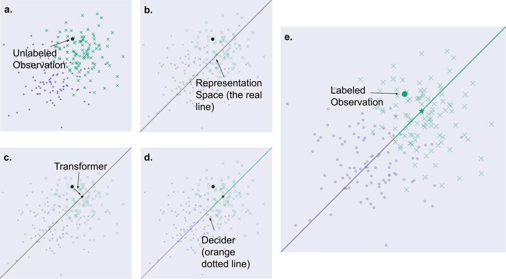 <!-- diagram of linear classifier (projection from R^d to R then threshold) for two class, spherical gaussians --> <!-- figure of problem --> <!-- figure with representation --> <!-- figure showing transformation of one data point to the line --> <!-- figure showing decider acting on a the transformed data point --> --- #### Example 1.2 - Decision Tree 1. .pu[representation]: a partition of $ \mathbb{R}^{d} $ 2. .pu[transformer]: maps a data point to a cell of the partition 3. .pu[deciders]: plurality (or average) of elements per cell 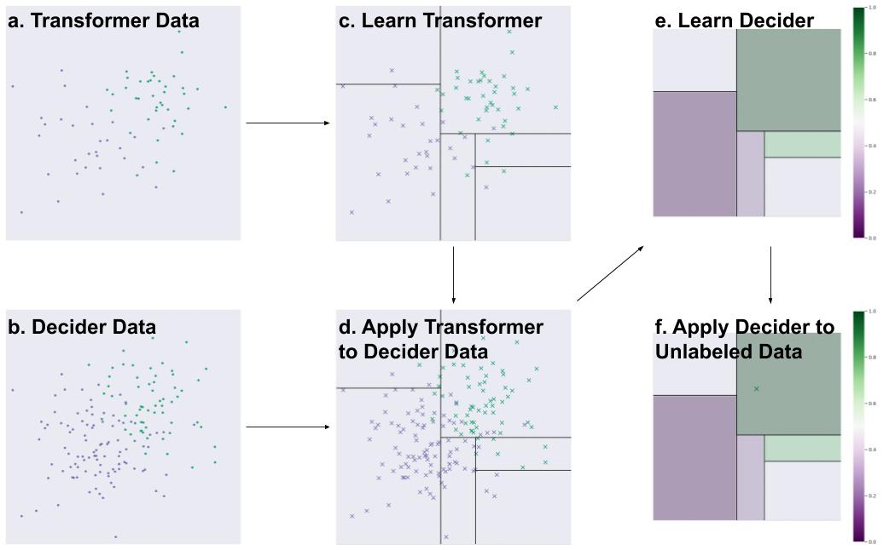 <!-- diagram of a partition for two class, spherical gaussians --> <!-- figure of representation (partition) --> <!-- figure of a data point in a cell of the partition --> <!-- figure of classifying a data point in a cell of the partition --> --- #### Example 1.3 - Decision Forests 1. .pu[representation]: a set of partitions of $ \mathbb{R}^{d} $ 2. .pu[transformer]: maps a data point to a cell of each of the partitions 3. .pu[deciders]: average of decision trees (posterior probabilities) 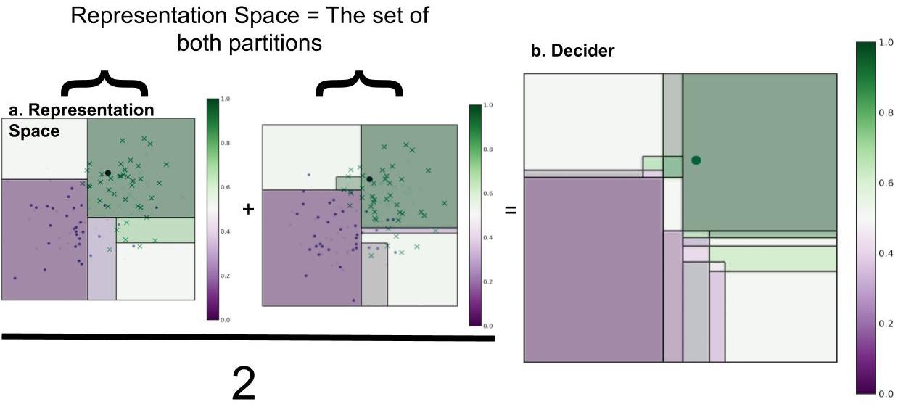 Each tree uses a different subset of data to transform (partition) space